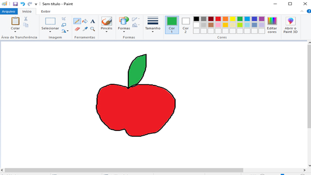
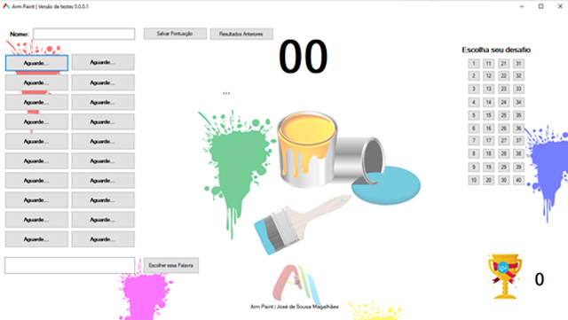

Arm Paint
Software de desafio de imagens e palavras.
Conheça o projeto...
O programa usado no desenvolvimento das atividades foi o Arm Paint. Software desenvolvido em C# com banco de dados SQL Server disponível para a plataforma Windows 7, 8.1 ou 10, desenvolvido pelo acadêmico do curso de Sistemas de Informação, José de Sousa Magalhães, da Universidade Federal do Piauí – UFPI.
O programa consiste de uma tela simples, com espaço para inserir nome do aluno, e espaço para se colocar a opção de imagem escolhida pelo aluno. Com relação a botões, tem-se os botões principais de Salvar e Verificar os resultados anteriores e escolher palavra.; no lado direito, tem-se as 40 opções de desafios de palavras previamente salvas no banco de dados; no lado esquerdo, tem-se os botões com as 20 opções de dicas disponíveis para cada desafio.
Mais detalhes
O Arm Paint, visto que ainda está em sua versão 0.0.0.1 necessita do uso conjunto com o Paint do Windows, ou qualquer outro software de desenho. O uso deste programa consiste em desenhar algo no software de desenho e tentar adivinhar a imagem em um tempo pré-determinado de 35 segundos.
Cada desafio caracteriza-se por um objeto, imagem, fruta, animal, dentre outras opções, e ao ser escolhida, o sistema dá 20 dicas em inglês de cada palavra, o aluno vai selecionando e quando achar a que julgar correta, ele clica em Escolher Palavra, o resultado de eu acerto é dado na hora. A pontuação do aluno vai de acordo com a quantidade de segundos que restar para que o tempo se esgote.
Ao final ele pode ainda salvar seus resultados e confrontar com os dos colegas que realizaram os desafios anteriormente. O banco de dados pode ainda ser atualizado a medida que o professor necessitar.
Caso de uso
As atividades tiveram início no dia do desenvolvimento do software, que compreendeu de 10/11/2019 a 14/11/2019. Neste período, os requisitos do software foram planejados, bem como a programação e designer foram desenvolvidos. Após este momento, o programa foi testado pela primeira vez em espaço reservado.
Depois do teste inicial, o mesmo foi instalado em todos os computadores do laboratório de informática da Escola Hesíchia de Sousa Brito, onde foi ainda, testado em todos os dispositivos para evitar falhas ou inoperância. Essa instalação e teste, ocorreu na manhã de 15/11/2019.
O uso prático do software ocorre na tarde do dia 18/11/2019, com a turma de 3ºF e. Seguidas do dia 19/11/2019, com as turmas de 2º E, 3ºE e 2ºF respectivamente, e por fim, no dia 20/11/2019 com a turma 3º G, contemplado três dias de uso do software com os alunos.
Ao final, fora questionado aos alunos se o momento os agradou, e se o processo poderia ser repetido mais vezes, a resposta fora um “SIM” em ambas as perguntas. Isso, leva a já deixar registrado que o processo irá se repetir usando o mesmo software, porém, com atividades diferentes.
Conclui-se então que, o uso do Arm Paint com os alunos da Escola Hesíchia aqui mencionados, contribuiu de inúmeras formas: no aprendizado dos alunos, algo que será avaliado posteriormente, na interação social entre os mesmos, e na diversificação e reinvenção da forma de dar aula, uma vez que proporcionamos aos mesmos um ambiente novo, com recursos novos de aprendizagem. Tal fato, enriquece-nos como professor.

Desenvolvido por: José de Sousa Magalhães
Aluno do curso de Sistemas de Informação - UFPI